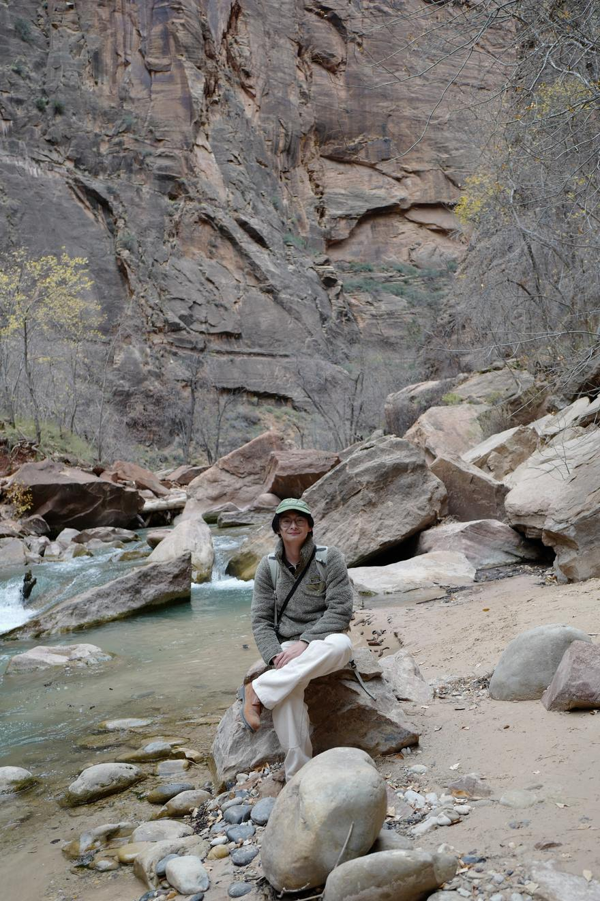

New York, NY
I'm a student at Columbia, and photography is the thing I care about most outside of class. It started as something I did between lectures and turned into a hobby.
I shoot digital, a Leica Q and a Fujifilm X-S20, for couples and grads in and around New York.
Booking proposals, engagements, pre-weddings, and graduation sessions across NYC and beyond.

Every frame on this site comes off one of two bodies — a fixed-lens rangefinder-style camera for wide, intimate environmental portraits, and a lightweight mirrorless zoom kit for coverage that moves fast on a shoot day.